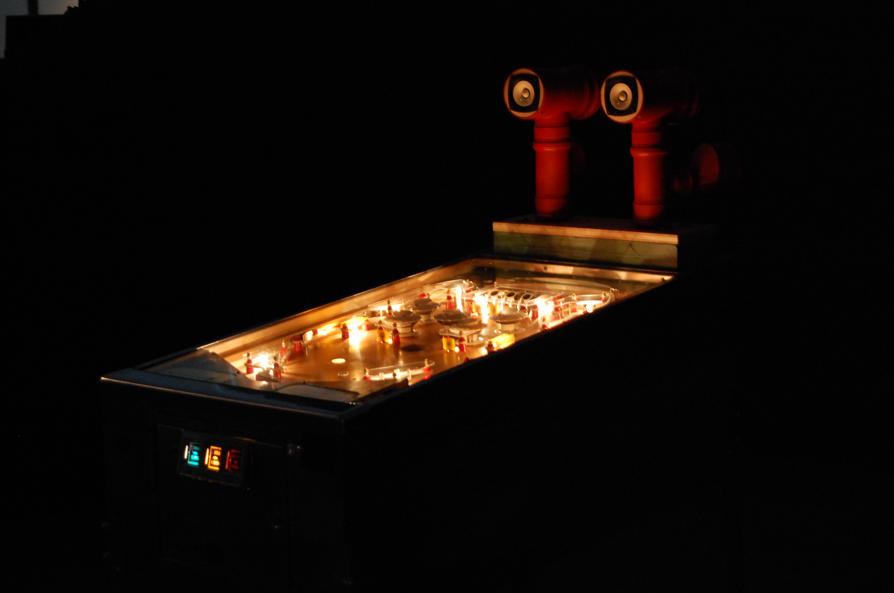
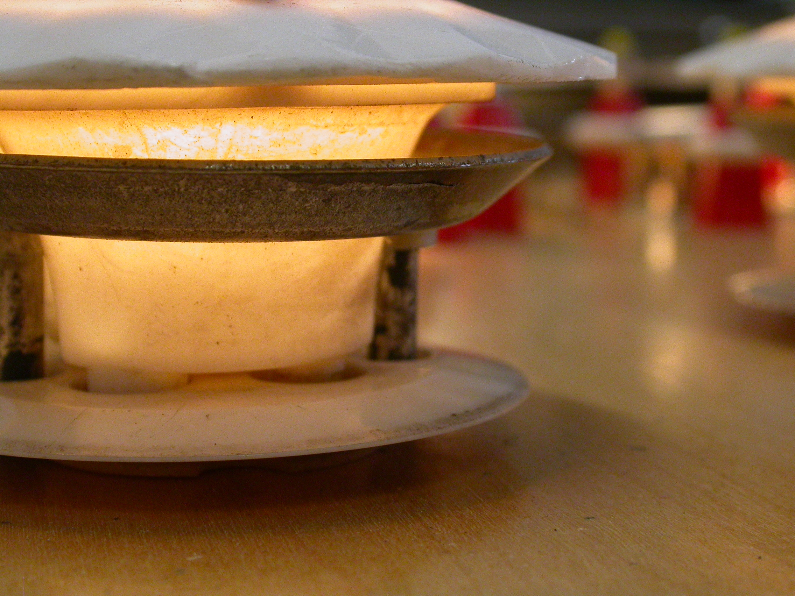
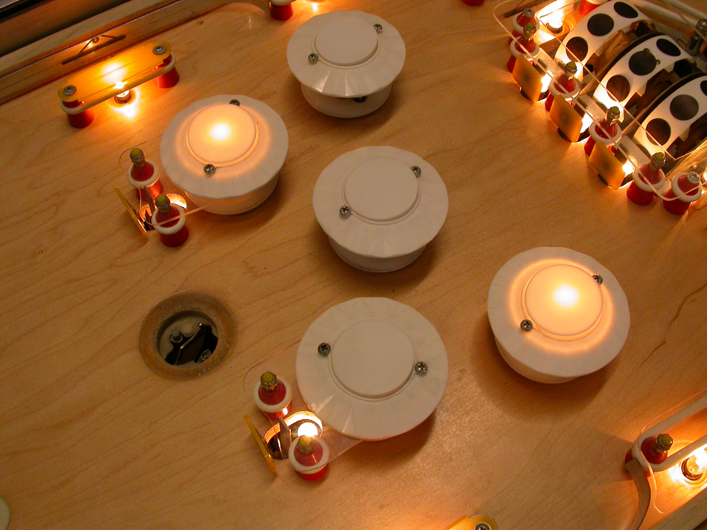

Bagatelle Concrète is a pinball machine turned musical instrument. Fares Kayali and I took a vintage pinball machine and removed everything that was not part of the gameplay core. Then we hooked up pickups and microphones to amplify that core experience – the pure physical joy of playing. Then we built loudspeakers and attached them to the machine. Bagatelle Concrète was exhibited in the Homo Ludens Ludens exhibition at the Centro de Arte y Creación Laboral in Gijon, Spain. At the accompanying conference I spoke about Venturing into the Borderlands of Playfulness.
  